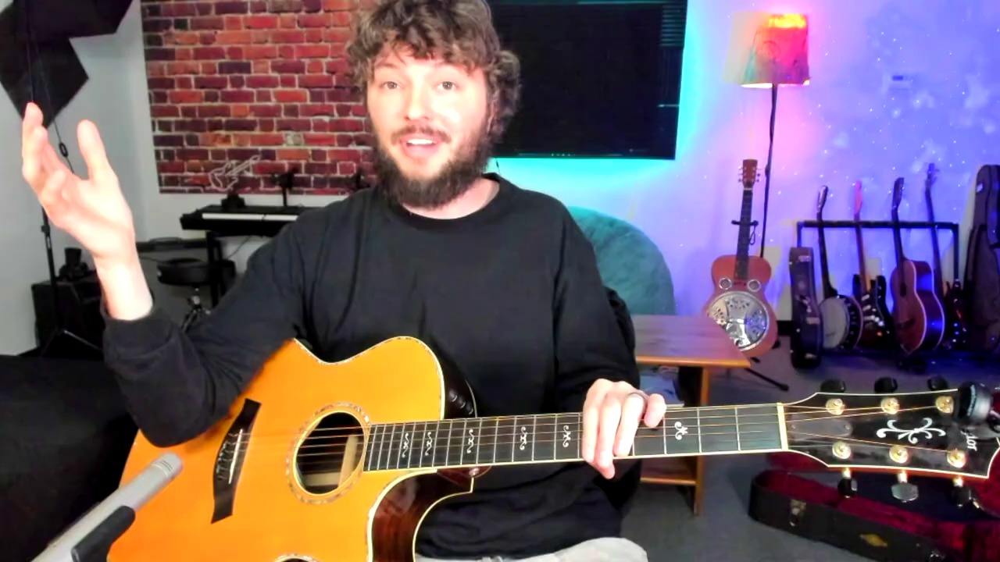
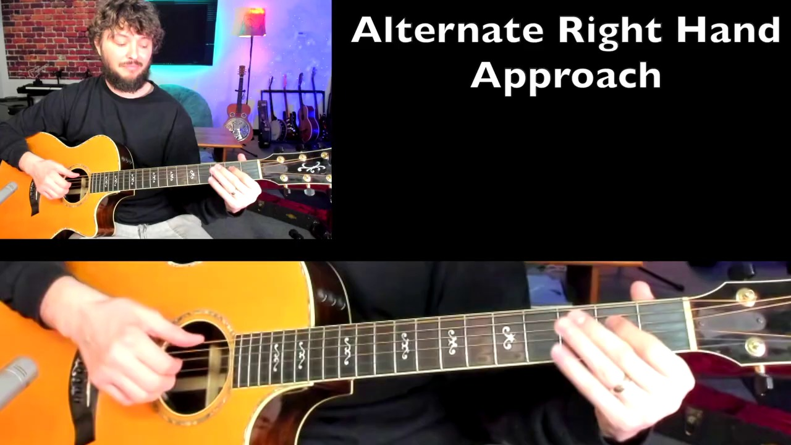
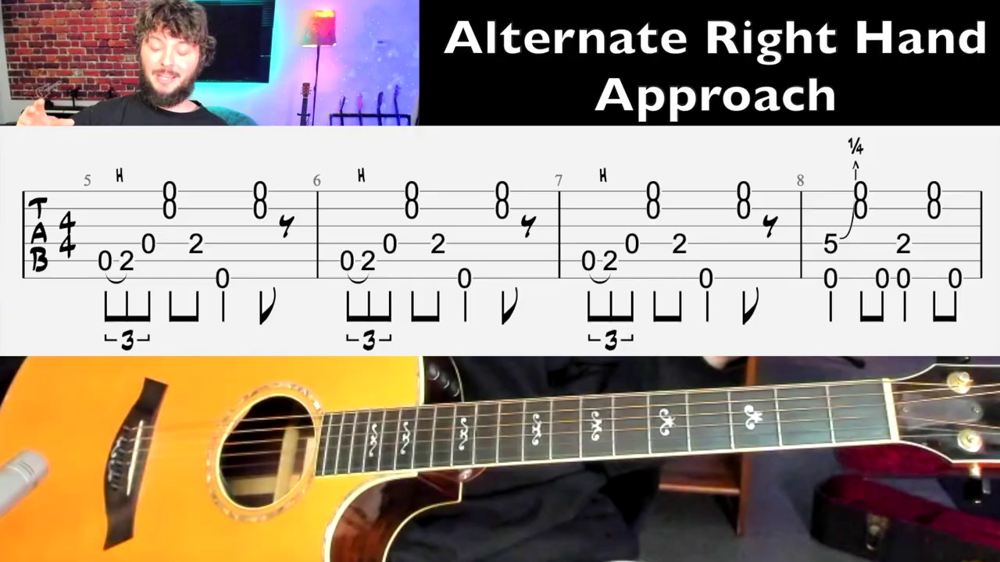
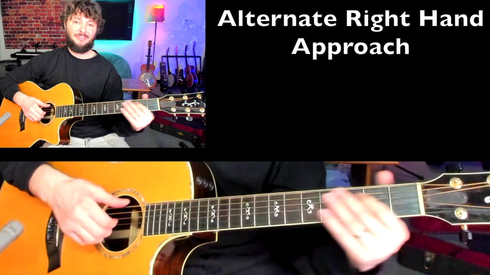
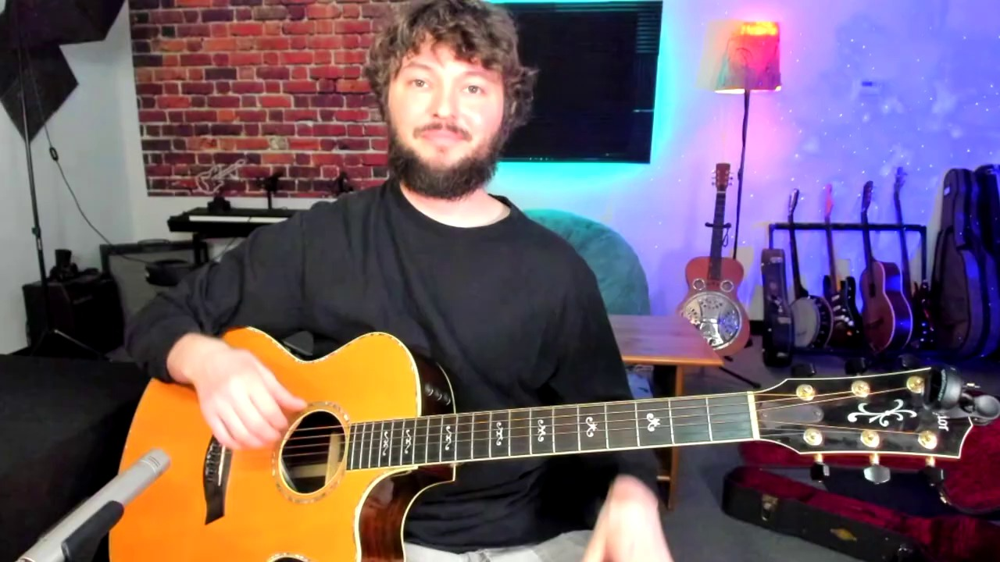
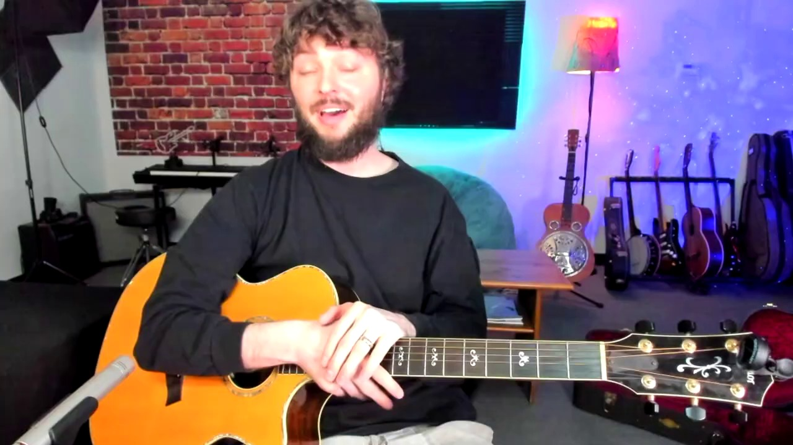

Key Moments








Summary & Script
Goin Down South (RL Burnside, Black Keys) Guitar Lesson with tabs
Source: https://www.youtube.com/watch?v=wAAPcsR0waU
Video ID: wAAPcsR0waU
Overview
The lesson breaks down the hill‑country blues instrumental “Going Down South” (popularized by R.L. Burnside and the Black Keys). The instructor explains the song’s riff‑based structure, demonstrates two right‑hand techniques for playing the groove, and guides you through the full eight‑bar pattern with slow, metronome‑backed play‑throughs. By the end you should be able to lock in the rhythm, execute the finger‑popping or back‑hand strum approach, and improvise over the repeating riff.
Topics Covered
- Hill‑country vs. Delta blues – Emphasis on repetitive riffs and limited chord changes, making it ideal for hand‑exercise and groove work.
- Riff layout – First four bars (count 4‑4‑4‑6) and the second four‑bar section; how the fifth‑fret note is doubled in the fourth measure.
- Finger‑popping technique – Thumb on low E, index on D, then pop the high E and B strings; use short, stopped notes with a slight quarter‑step bend.
- Dynamics & muting – Left‑hand damping right after each pop for a crisp, percussive sound.
- Alternative right‑hand – Back‑hand strum (rotation motion) that simultaneously hits the low string with the thumb, adding a click‑like percussion.
- Practice workflow – Learn the basic pop version first, then add the back‑hand strum, finally combine both.
- Slow metronome play‑through – Eight‑bar run‑throughs in both techniques to lock timing.
- Tips & troubleshooting – Keep the wrist stable, focus on rotation rather than arm motion, and don’t over‑emphasize the slap when using the back‑hand style.
Key Takeaways
- Hill‑country blues riffs stay on a short groove; mastering the repetitive pattern lets you play the whole song.
- The main riff repeats eight bars: first half (4 bars, with a 6‑beat fourth bar) and a second half played three times before returning.
- Two right‑hand options:
- Finger‑pop – fast, short pops using two fingers; good for clean, percussive tone.
- Back‑hand strum – rotational wrist motion that also mutes the low string, adding extra groove.
- Left‑hand muting right after each pop is crucial for the “pop” feel.
- Start with the simpler pop technique, then layer in the back‑hand strum to enrich the rhythm.
- Keep the motion wrist‑based and rotational; avoid large arm movements.
Notable Quotes
- “Hill‑country blues is really more riff‑based or groove‑based… they won’t change the chords as much.”
- “The tiny quarter‑step bend gives it that blues bend, but you don’t pull it far.”
- “When you add the back‑hand strum you get a little more rhythm, a little more groove.”
- “Your wrist is basically staying put—it’s a rotational motion, like opening a key at a lock.”
Podcast Script
JORDAN: Welcome to SlackCasts by PodSlacker — where AI does the watching so you can do the listening. If you want a richer experience with today's episode, visit PodSlacker dot com slash SlackCasts — you'll find a written summary, key frame moments from the video, and an interactive AI chat to explore the topic as deep as you like. Now let's get into it.
MIKE: Today we're dissecting “Going Down South,” that hill‑country blues staple made famous by R.L. Burnside and later the Black Keys. It’s a perfect case study in how a simple eight‑bar riff can drive an entire song.
JORDAN: The instructor opens by contrasting hill‑country blues with Delta blues—hill‑country leans on repetitive, groove‑centric riffs and minimal chord changes, which makes it a solid platform for right‑hand endurance drills.
MIKE: Right, that “stay‑in‑the‑groove” philosophy is why the song repeats the same eight‑bar pattern over and over. Once you lock that down, you’ve essentially mastered the whole track.
JORDAN: He breaks the riff into two four‑bar sections. The first three bars are straight 4/4, and the fourth bar extends to six beats, essentially playing the fifth‑fret note twice in quick succession.
MIKE: That extra two‑beat tail gives the groove a subtle push before the loop cycles back—a little rhythmic tension that keeps it from feeling static.
JORDAN: The core right‑hand technique he teaches first is the finger‑pop. Thumb anchors the low E, index plucks the D string, then the high E and B strings are popped with the middle and ring fingers, each pop being short and lightly bent a quarter step.
MIKE: The quarter‑step bend is crucial for that authentic blues micro‑tonal flavor without turning it into a full bend that would derail the tight rhythm.
JORDAN: He emphasizes left‑hand damping immediately after each pop, creating a crisp, percussive snap. Without that muting, the notes bleed together and you lose the “pop” articulation.
MIKE: That muting trick is essentially a left‑hand palm‑mute on the higher strings, right? It turns a melodic line into a rhythmic kernel.
JORDAN: Exactly. After the pop version, he introduces the alternative back‑hand strum. Instead of popping the top strings, you rotate the wrist, striking the high strings with the backs of the fingers while the thumb thumps the low E, creating a click‑like percussive accent.
MIKE: The back‑hand strum adds a layer of groove because the thumb’s low‑string hit doubles as a percussive beat, marrying rhythm and harmony in one motion.
JORDAN: He warns that the back‑hand technique feels awkward at first; the motion is purely rotational, not an arm swing. Think of it as unlocking a key—your wrist stays in place while the hand rotates around the axis.
MIKE: That wrist‑centric approach is the same principle behind funk strumming and many hybrid picking patterns—minimizing arm movement for speed and control.
JORDAN: Practice workflow: start with the pure finger‑pop to internalize the timing, then layer the back‑hand strum, and finally try to blend both within the eight‑bar loop.
MIKE: And he backs each step with slow metronome play‑throughs—first the pop version, then the back‑hand version—so you can lock the subdivision of the six‑beat fourth bar without rushing.
JORDAN: A key troubleshooting tip: don’t over‑emphasize the slap component of the back‑hand strum. The primary goal is clean note articulation; the click is a by‑product, not the focus.
MIKE: That’s a common mistake—musicians often think louder percussive hits equal better groove, but in hill‑country blues the feel comes from tight, understated dynamics.
JORDAN: He also mentions that the back‑hand strum is transferable; once you nail it here, you can apply it to other groove‑centric blues or even folk songs that use a percussive thumb‑bass pattern.
MIKE: Which is why he frames the technique as a long‑term investment despite the short‑term awkwardness. It expands your right‑hand palette across genres.
JORDAN: Summarizing the structural insight: the eight‑bar riff consists of the first four bars (4‑4‑4‑6) then a three‑time repetition of the second four‑bar motif before returning to the start.
MIKE: That layout creates a “call‑and‑response” feel within the groove itself—perfect for soloists to layer over during jams.
JORDAN: The final takeaway: lock the wrist, use precise left‑hand damping, and let the rotational back‑hand strum add percussive depth without overwhelming the pocket.
MIKE: With those fundamentals, you can not only play “Going Down South” convincingly but also improvise over its hypnotic loop, turning a simple riff into a platform for expressive solos.
JORDAN: That's a wrap on today's SlackCast. Head over to PodSlacker dot com slash SlackCasts for the written summary, visual key moments, and an AI chat to dive even deeper into today's topic. Until next time — slack off smarter.